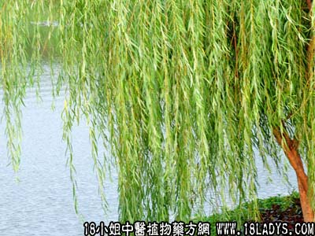

别名：大叶柳。
植物名：垂柳。
生长环境：本品为落叶乔木。喜生于水边或堤岸、水池旁，作固提或观赏用。
分布：产我国长江以南及北部各省，广东除海南岛外，到处有生长。
入药部分：枝、叶。
采集期：全年。
自采地点：涌边。
性味：性微凉、味淡。
功能：清热。
主治、用量和用法：1、外感发热：用干枝连叶1至2两，清水煎服；2、湿火骨节痛：用法同上；5、口角歪斜：用枝钩口角。向左歪则钩右，向右歪则钩左。
验方：（治湿火骨节疼痛方）清明柳1两、桑枝1两、枸杞头1两、清水五碗，煎成一碗服。
（方解）湿为六气之一，如伤湿化热，成为湿火，流于骨节，为湿火骨节疼痛。本方用桑枝、枸杞头、透络舒筋，利湿清热，清明柳解郁热，合成利湿清火之剂。对于湿火郁结，内灼筋骨而致的疼痛有效。
（方歌）湿火为患骨节疼，清明柳用枸杞头，桑枝合来各一两，五碗煎成一碗收。
参考资料：《广东中医》（1959.1）开平县第一人民医院某老中医治麻后肺炎的秘方：马口水、垂杨柳，此方仅二十余天就把43个麻后并发肺炎的垂危病人挽救过来，方如下：
（一）1、马口水250～500毫升，用米喂马，在马口两角流出之口水；2、垂杨柳（新鲜）40～60克；3、糯米少量（或白米）。
制备：取马口水、垂杨柳、糯米，共置瓦煲中以明火煮沸30分钟，静置片刻，倾出全部清液，盛于器皿中，作随意饮料。
（二）马屎干6～10克、鲜垂杨柳40～60克、水500～600毫升。
制备：取马屎、垂杨柳、水，共置瓦煲中，以明火煎沸30分钟，用纱布滤过，或静沉清20分钟，倾出清液，先取30～50毫升，置“凹盅盖”中，用马牙研磨20分钟，至溶液呈乳白色即先服。其余作随意饮料。
（三）马牙、垂杨柳。1、取垂杨柳40～60克，加水500～600毫升，置瓦煲中明火煮沸30分钟，静置片刻，过滤取其滤液，冲药服用。2、取冷沸水30～50毫升，置“凹盅盖”，用马牙研磨20分钟，至其水溶液呈乳白色时，即可用垂杨柳汤冲服。
本文解释权归中药大全，本文地址：https://www.daquan.com/post/1622.html